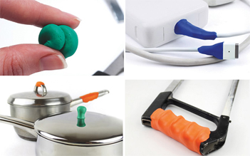

Чудо пластилин - Сильный пластилин
Существует
пластилин (по научному - Неньютоновская жидкость), который
твердеет при резком движении, нажатии или броске, но
растекается, если его не трогать. Наглядным и простейшим
примером является смесь крахмала с водой в пропорции 1:1.
В
Малайзии в одном из торговых центров установили бассейн с
указанной жидкостью – пластилином, которая выглядит как
обычная вода. Бассейн служит веселым аттракционом, по которому
нужно быстро пробежать чтобы не утонуть.
В
2003 году девушка дизайнер Jane Ní Dhulchaointigh придумала
другой супер сильный пластилин Sugru, который с
легкостью может заменить клей или холодную сварку. Умный
пластилин уже вовсю применяется в хозяйстве для ремонта
бытовых вещей, ремонта водопроводных труб от протекания, для
изготовлении защиты спортсменов. При помощи Сугру почти все
вещи в доме, можно сделать удобнее. Сделать ручку для пасатиж,
пилы, кастрюли, сковороды, лыжных палок. Умный пластилин,
примет предаваемую ему нужную форму и затвердеет до
силиконо-подобного вещества в течении 24 часов после
извлечения его из упаковки.
Пластилин сочетается с такими материалами как - стекло, металл, пластик, керамика. Он выдерживает температуру от – 60 до + 180 градусов. Состав чудо пластилина - 30% силикон, от 20 до 50% талька, Метилтрис силан, γ-аминопропилтриэтоксисилан, и дибутилоловодилаурат.